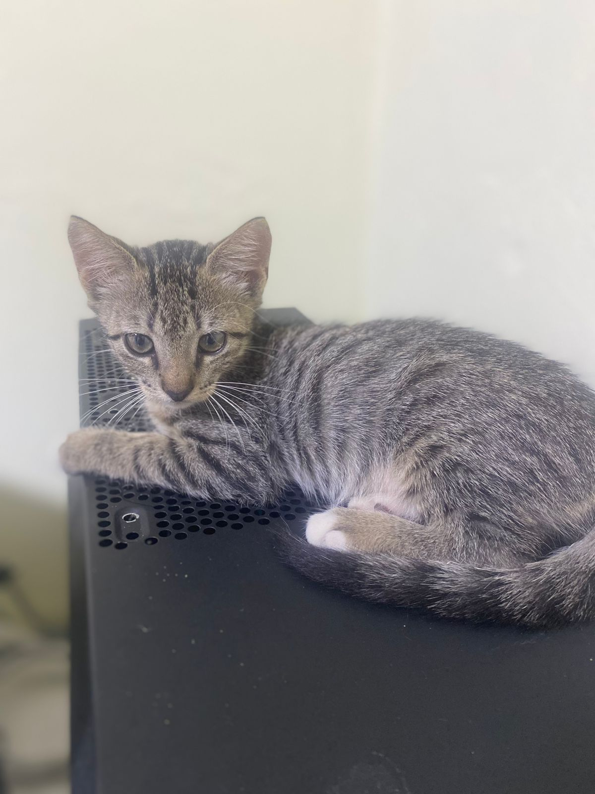

La Reina Waffles, conocida por su mirada de tirana pero con un buen corazón. La hora de su comida es sagrada, si se tardan correrá sangre.

Un poco tonto pero amado por todos en el reino, excepto por la reina Waffles a quien suele estresarle su hiperactividad. Si lo dejas solito le da ansiedad
La noble gatuna con mas poder en el reino, equilibrio entre ternura e intensidad. Se embarcó hace tiempo en un viaje aventurero en busca de grandes tesoros para su reino.
Fundador del reino gatuno, ya no está entre nosotros pero si en nuestros corazones.

Aún no pertenece a la realeza de este reino, está en entrenamiento para ser enviada a una misión en otras tierras lejanas.
Olvida esos pequeños prejuicios: ''Los gatos son mas independientes'', ''No necesitaré estar tan pendiente'', ''Solo 20m de atención al día son más que suficientes''.
No hay algo más falso que todo eso, los gatos son todos pequeñas cajitas de sorpresas con sus propias personalidades y necesidades. He tenido varios gatos a lo largo de mi vida y no, ninguno ha sido igual a otro, de hecho, podría arriesgarme a decir que en ocasiones (depende de tu gatito) suelen requerir mucho más atención, cuidados y mimos que un cachorro canino.
Debes tener en cuenta el tiempo, las necesidades de tu gatuno y los gastos que se puedan presentar.
Compras previas como una pequeña camita o torre, no solo brindarle alimento seco, tener pendiente las visitas al veterinario y agendar desde antes en tu calendario el día de su castración.
A medida que pases con tu gatito sabrás que le gusta y que no, que comprar y que no pero ojo... trabaja esas compras compulsivas, Karen. La mayoría de veces preferirá la caja en vez del juguete así que controlate.
Rindete, ya eres su esclavo y tu casa no te pertenece. De nada.